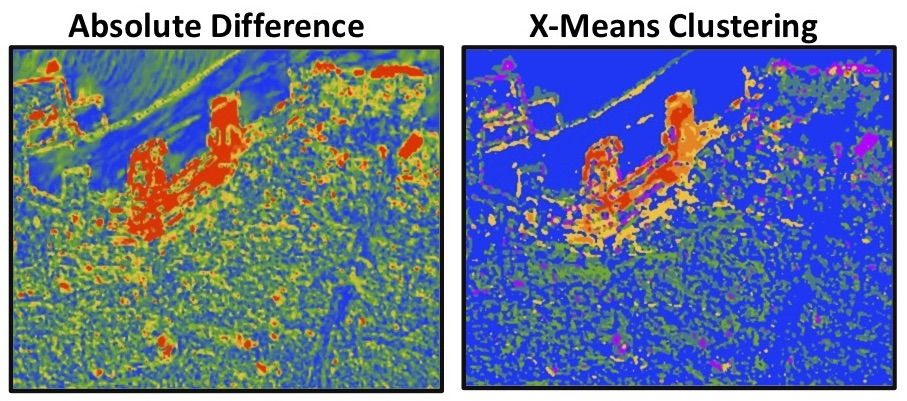
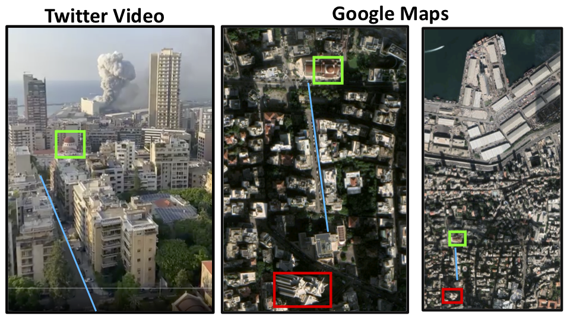
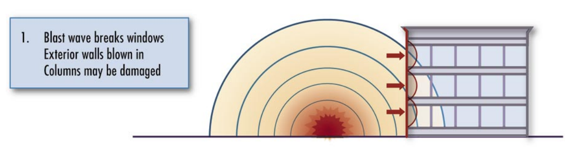
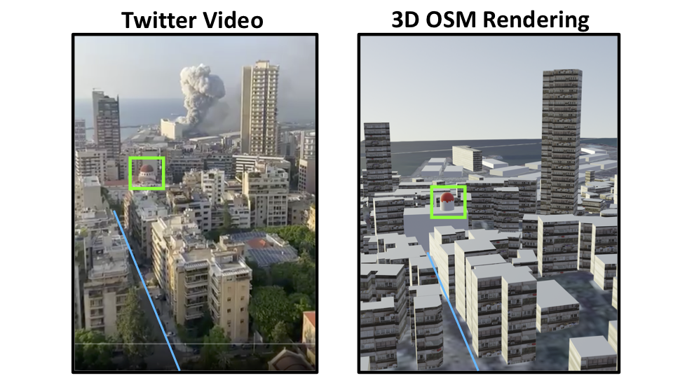
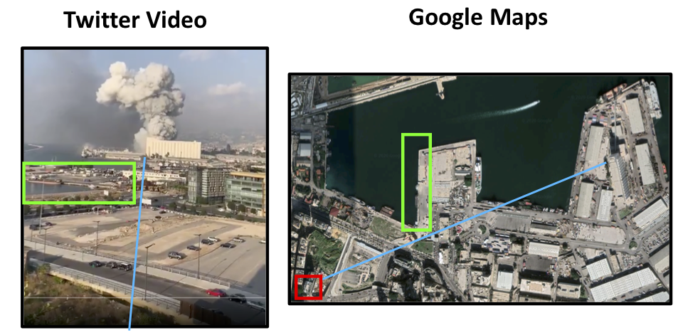
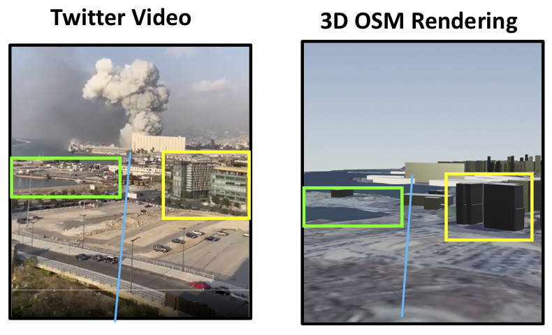
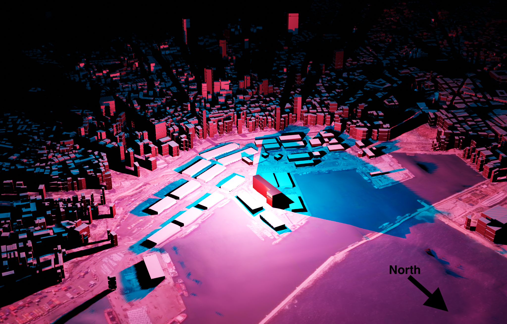
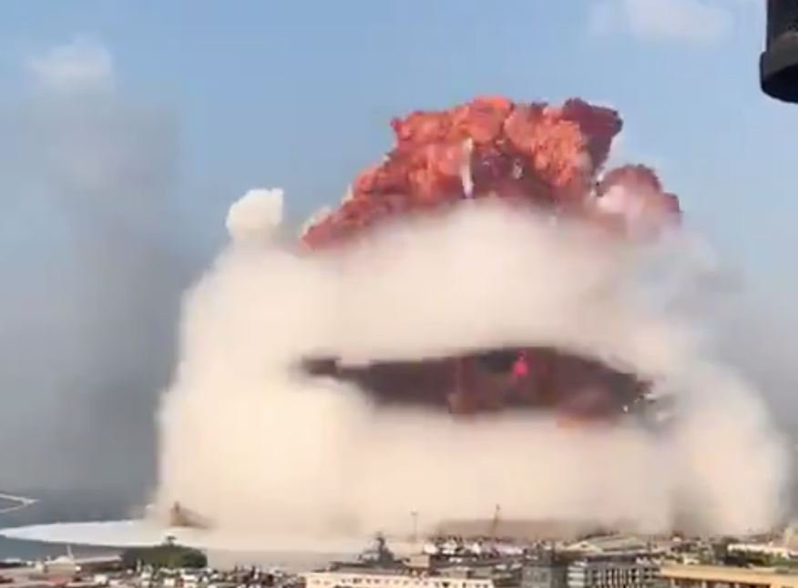
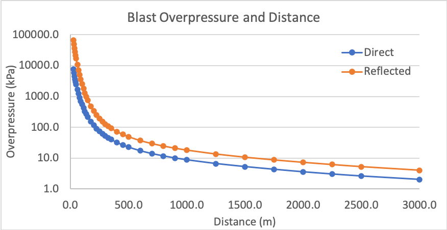
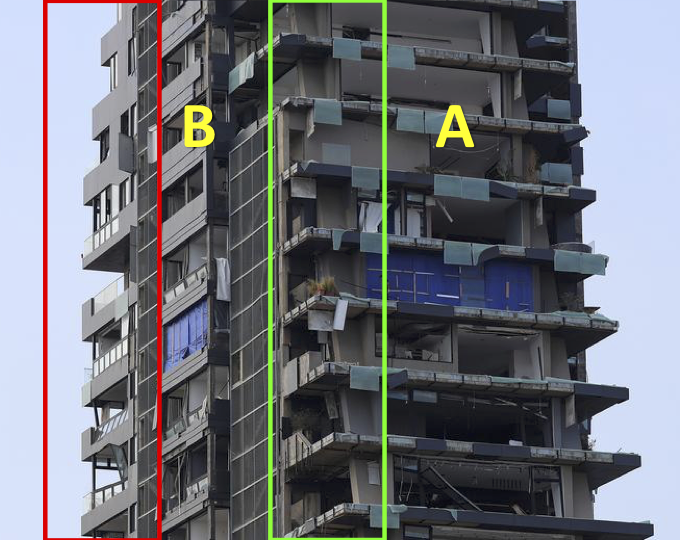

Building a 3D Model of the Beirut Explosion
2020-08-16
Blast damage assessment in Beirut is being carried out using two-dimensional satellite imagery. These approaches underestimate damage by failing to capture damage done to the sides of buildings. I outline an alternative approach using Open Street Map data to create a 3D model of Beirut and the explosion to analyze directional blast damage.
Satellite Imagery and its Limits
Following the recent explosion in Beirut, I built a tool that uses Sentinel-2 imagery to map the destruction caused by the blast. After some trial and error, I arrived at a fairly simple two step process: first, measuring the change in spectral signatures between pre- and post-explosion images. Second, applying an X-Means clustering algorirthm to the resulting image (yielding the map on the right), or taking the absolute difference (yielding the map on the left):

Red areas on the left indicate high levels change between the pre- and post- explosion images. On the right, the magnitude, direction, and spectral characteristcs of the change are used to classify different types of damage; green indicates minor changes, red and orange seem to indicate burnt areas, while purple areas match places that suffered structural damage. These align fairly closely to a damage map of Beirut generated by NASA.
Though satellite imagery analysis is undoubtedly one of the best tools we have at our disposal to analyze this sort of phenomenon, it appears to systematically underestimate the extent of damage in Beirut.
Below is one of the most viewed videos of the explosion:
Stunning video shows explosions just minutes ago at Beirut port pic.twitter.com/ZjltF0VcTr
— Borzou Daragahi 🖊🗒 (@borzou) August 4, 2020
Geolocating this video was pretty simple thanks to the Greek Orthodox church (highlighted in green below) and the road leading to it (highlighted in blue). The red box indicates the likely location (33.889061, 35.515909) from which the person was filming:

The video shows heavy damage being sustained by areas well outside the zones classified as damaged in the maps above (both my own and NASA's). Indeed, substantial damage was reported several kilometers away.
Why are satellite images underestimating damage in Beirut? Satellite images are taken from above, and are two-dimensional. Much of the damage caused by the blast, however, was directional; the pressure wave hit the sides of buildings, as shown in this diagram from a FEMA manual:

Areas close to the explosion suffered so much damage that it could be seen from above, but even if an apartment building had all of its windows blown out, this would not necessarily be visible in a top-down view. Even for radar, which does technically collect data in three dimensions, the angle problem remains; a high resolution radar might be able to tell you how tall an apartment complex is, but it won't give you a clear image of all sides. Case in point: the NASA damage map was created using Sentinel-1 SAR data. In a nutshell, damage assessment in this case is a three-dimensional problem, and remote sensing is a two-dimensional solution.
Creating a 3D model of Beirut
To create a more accurate rendering of directional blast damage, three dimensional data are required. Data from Open Street Maps (OSM) contains information on both the "footprints" (i.e., the location and shape) as well as the height of buildings, which is enough to create a three dimensional model of Beirut. 3D rendering was done in Blender using the Blender-OSM add-on to import a satellite basemap, terrain raster, and OSM data.
Geolocated videos of the blast can be used to verify and adjust the model. Below is a side-by-side comparison of the twitter video and a 3D rendition of OSM data:

Some slight adjustments to the raw OSM data were made to achieve the image on the right. The building footprints are generally very accurate and comprehensive in coverage, but the building height data does occasionally have to be adjusted manually. A simple and reliable way of doing this is to look at the shadows cast by the building on the satellite base map and scale accordingly. I also added a rough texture to the buildings to help differentiate them, and added the domed roof of the Greek Orthodox church for reference.
For good measure, a second video is geolocated following the same procedure:
Another view of the explosions in Beirut pic.twitter.com/efT5VlpMkj
— Borzou Daragahi 🖊🗒 (@borzou) August 4, 2020
The second pier (highlighted in green) and the angle (in blue) serve as references:

The video was taken from the rooftop of a japanese restaurant called Clap Beirut (in red above). This is confirmed by a picture of the rooftop bar on google images, which matches the bar that can be seen at 0:02 in the twitter video. Below is a comparison of the video view and the 3D OSM model:

Though somewhat grainy, the basemap on the OSM rendering shows the same parking lot in the foreground, the second pier, and the same two buildings highlighted in yellow. Having created a 3D model of Beirut using OSM data, we can now simulate how the explosion would interact with the cityscape.
Using a Viewshed Analysis to Assess Blast Exposure
As the pressure wave moved through the Beirut, some buildings bore the full force of the explosion, while others were partially shielded by taller structures. A viewshed analysis can be conducted to identify surfaces that were directly exposed to the explosion by creating a lighting object at ground zero; areas that are lit up experienced unobstructed exposure to the blast:
Pressure waves, like sound, are capable of diffraction (beding around small obstructions). To roughly simluate this, the lighting object is gradually raised, allowing the light to pass "around" obstructions. Warehouses on the Eastern side of the docks, as well as the first row of apartment buildings facing the docks are immediately affected. As the lighting object rises above the warehouse, more areas suffer direct exposure.
Using two lighting objects-- a red one at 10 meters and a blue one at 20 meters above the warehouse at ground zero-- the intensity of the blast in different areas is highlighted; red areas suffered direct exposure, blue areas suffered partially obstructed exposure, and black areas were indirectly exposed.

Accounting for Diffraction
The viewshed analysis tells us which sides of a building are exposed to the blast, but it's a pretty rough approximation of the way the pressure wave would respond to obstacles in its path. As previously mentioned, pressure waves behave much like sound waves or waves in water: they bounce off of objects, move around obstructions, and gradually fade.
To get a more precise idea of the way in which the blast interacted with the urban environment, we can model the blast as an actual wave using the "dynamic wave" feature in Blender. This effectively involves creating a two-dimensional plane, telling it to behave like water, and simulating an object being dropped into the water. By putting an obstruction in this plane, we can see how the wave responds to it. As an example, the grain silo has been isolated below:
As the blast hits the side of the silo, it is reflected. Two large waves can be seen traveling to the right: the initial blast wave, and the reflection from the silo which rivals the initial wave in magnitude. To the left, the wave travels around the silo but is significantly weakened. A still frame from the second twitter video shows the effect of the grain silo on the pressure wave:

Broadening the focus and adding the rest of the OSM data back in, we can observe how the pressure wave interacted with buildings on the waterfront:
The warehouses on the docks were omitted to emphasize the interaction between the pressure wave and the waterfront buildings; their light metal structure and low height means they would have caused little reflection anyway. The general pattern of the dynamic wave is consistent with the viewshed, but adds a layer of detail. The blast is reflected off of the silo towards the East, leading to a double hit. Though the wave still moves around the silo to the West, the pressure is diminished. Once the wave hits the highrises, the pattern becomes noisy as the wave both presses forward into the mainland and is reflected back towards the pier.
Modeling the Pressure Wave
Now that we've accounted for the directionality of the blast and the influence of buildings, we can model the pressure wave itself. An expanding sphere centered at ground zero is used to model the progression of the pressure wave through the city. To get a visual sense of the blast's force, the color of the sphere will be a function of the pressure exerted by pressure wave.
The pressure exerted by the explosion in kilopascals (kPa) at various distances can be calculated using the DoD's Blast Effects Computer, which allows users to input variables such as the TNT equivalent of the ordnance, storage method, and elevation. Though there are several estimates, the blast was likely equivalent to around 300 tons of TNT. The direct "incident pressure" of the pressure wave is shown in blue. However, pressure waves from explosions that occur on the ground are reflected upwards, amplifying the total pressure exerted by the blast. This "reflected pressure" is shown in orange:

For reference, 137 kPa results in 99% fatalities, 68 kPa is enough to cause structural damage to most buildings, and 20 kPa results in serious injuries. 1-6 kPa is enough to break an average window. At 1km, the reflected pressure of the blast (18 kPa) was still enough to seriously injure. Precisely calculating the force exerted by an explosion is exceptionally complicated, however, so these numbers should be treated as rough estimates. Further analysis of the damage caused by blasts blast can be derived from the UN's Explosion Consequences Analysis calculator which provides distance values for different types of damage and injuries.
Linking the values in this graph to the color of the pressure wave sphere provides a visual representation of the blast's force as it expands. An RGB color scale corresponds to the blast's overpressure at three threshold values:
By keeping the lighting object from the viewshed analysis and placing it within the expanding sphere of the pressure wave, we combine two key pieces of information: the pressure exerted by the blast (the color of the sphere), and the level of directional exposure (brightness).
Now, referring back to the two geolocated twitter videos from earlier, we can recreate the blast in our 3D model and get some new insights. Below is a side-by-side comparison of the first video and the 3D model:
Judging by the twitter video alone, it would be very hard to tell the fate of the person filming or the damage caused to the building that they were in. However, the 3D model shows that despite having an unobstructed view of the explosion, the incident pressure of the pressure wave had decreased significtantly by the time it reached the viewing point. The blue-green color corresponds to roughly 15 kPa-- enough to injure and break windows, but not enough to cause structural damage to the building.
The second twitter video was taken slightly closer to ground zero, but the view was partially obstructed by the grain silo:
Though the pressure wave probably exerted more pressure compared to the first angle, the partial obstruction of the grain silo likely tempered the force of the blast.
Assessing Damage to the Skyline Tower
As a concrete example of how this approach can be used to assess damage (or predict it, if one had the foresight), let us consider the Skyline Tower, pictured below following the explosion:

This partial side view shows two faces of the building, labelled "A" and "B" above. Side A was nearly perpendicular to the blast, and just 600 m from ground zero. Based on the previous modeling, the pressure wave exerted roughly 40 kPa on this side of the building. The corner where sides A and B meet, highlighted in green, shows total destruction of windows, removal of most siding panels, and structural damage. The back corner, highlighted in red, shows many windows still intact, indicating that the maximum overpressure on this side of the building likely didn't exeed 10 kPa. In other words, standing on the front balcony would likely have led to serious injury but standing on the back balcony would have been relatively safe.
The animation below shows the Skyline Tower as it is hit by the pressure wave, with sides A and B labeled:
The bright green color of the pressure wave indicates a strong likelihood of structural damage. Side A can be seen taking a direct hit, while side B is angled slighly away. Despite not being directly exposed to the blast, it likely still took reflective damage from some of the neighbouring buildings. Both the incident overpressure indicated by the color of the sphere, as well as the relative brightness of sides A and B both correspond closely to the observed damage taken by the Skyline Tower.
Further Research
Though satellite imagery analysis is an indispensable tool in disaster response, it has limitations. Urban blast damage in particular is difficult to assess accurately because it is highly directional and much of it cannot be seen from a bird's eye view. Using free and open source tools, an interactive 3D model of an urban explosion can be generated, allowing for a highly detailed investigation of directional blast damage. This can be achieved in three steps:
First, creating a 3D model of the urban area using Blender and Open Street Maps data. Second, conducting a viewshed analysis using lighting objects to gauge levels of unobstructed exposure to the pressure wave. Third, modeling the explosion using geolocated videos of the event and ordnance calculators. For added detail, a dynamic wave analysis can be used to more precisely model how the pressure wave interacts with buildings.
Once properly modeled, the explosion can be viewed from any angle in the city. The viewshed analysis can be calibrated more finely by ground-truthing various damage levels (e.g. broken windows) at different locations. In the absence of an official address registry in Beirut, OSM is already being used by the Lebanese Red Cross (donate here) to conduct neighborhood surveys assessing blast damage. As such, this type of damage analysis can quickly be integrated into relief efforts, adapted to model disasters in different cities, and can even be used to simulate the destructive potential of hypothetical explosions to promote readiness.